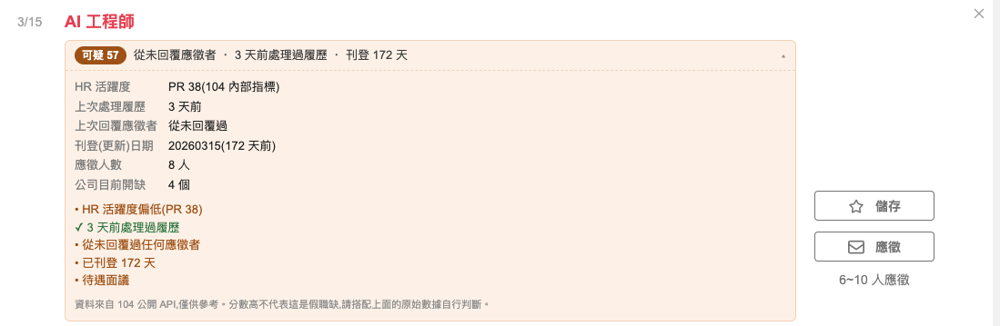

在 104 人力銀行的職缺上,直接顯示 HR 到底有沒有在處理履歷。
第三方獨立開發,非 104 人力銀行官方產品104 的資料庫其實記錄了每個職缺「上次處理履歷」和「上次回覆應徵者」的時間, 而且 104 網頁自己載入職缺時就會把這些欄位抓回你的瀏覽器。但 104 只會在頁面上顯示正面的那一半 (例如「7 天內處理過履歷」),從不告訴你這家公司從來沒有回覆過任何應徵者。
這個外掛把另一半補上。每張職缺卡片會多出一列徽章:

送審中,通過後這裡會放上一鍵安裝的連結,並且能自動更新。 在那之前請用下面的方式二。
ghost-job-detector-x.y.z.zip,解壓縮到一個你不會刪掉的資料夾。
chrome://extensions/ 後按 Enter。
手動安裝不會自動更新;有新版時請回到
Releases
重新下載,並在 chrome://extensions/ 點該外掛的「重新載入」。
另外 Chrome 每次啟動可能會提醒你「停用開發人員模式的擴充功能」—— 點「保留」即可。
| 環境 | 支援 | 說明 |
|---|---|---|
| Chrome(桌面版) | ✅ | macOS、Windows、Linux 都可以 —— 決定的是瀏覽器,不是作業系統 |
| Edge | ✅ | 同為 Chromium 核心,安裝方式相同 |
| Brave、Vivaldi 等 Chromium 瀏覽器 | ✅ | 同上 |
| Firefox | ❌ | 擴充功能格式不同,目前沒有 Firefox 版 |
| Safari | ❌ | 同上 |
| 手機 / 平板 | ❌ | Android 與 iOS 版 Chrome 都不支援擴充功能,這是瀏覽器本身的限制 |
依照最常見的順序檢查:
chrome://extensions/ 確認右上角的開關是開的。
如果徽章出現但寫著「無法取得資料」或「資料格式可能已變更」,那多半是 104 改版了。 外掛的彈出視窗會顯示連續失敗的次數,麻煩到 GitHub Issues 回報。
風險分數只會叫你別投,所以另外加了一個綠色的「機會」徽章,三個條件同時成立才會出現:
| 條件 | 門檻 |
|---|---|
| 目前應徵人數少 | ≤ 3 人 |
| 刊登(更新)時間新 | ≤ 7 天 |
| HR 近期真的在看履歷 | ≤ 7 天內處理過 |
| 幾乎沒有風險訊號 | 分數 ≤ 9 |
為什麼不能只看應徵人數。 實測 1,144 筆:3 人以下應徵的職缺佔了 54%,標了等於沒標;而且它們的 刊登天數中位數(4 天)並沒有比 11–30 人那組(3 天)新 —— 少人應徵不代表新刊登。 其中還有 16.6% 是「掛了三週以上還沒人投」的滯銷缺,中位數 21 天, 只看應徵人數會把求職者推去投這些。三個條件的交集約佔 30%。
分數 0–100,由多個訊號加總而成,分級為
0–19 正常 / 20–39 留意 /
40–64 可疑 / 65+ 高風險。
| 訊號 | 分數 |
|---|---|
| HR 活躍度 PR < 30 / < 50 | +30 / +15 |
| 近 30 天內無處理紀錄 | +30 |
| 超過 14 天 / 7 天沒處理履歷 | +22 / +14 |
| 近 90 天內無 104 站內回覆紀錄 | 不計分(僅呈現) |
| 刊登超過 90 / 60 / 30 天 | +18 / +12 / +6 |
| 50 人以上應徵但一週沒處理 | +10 |
| 公司同時開 30 / 15 個缺以上 | +10 / +5 |
| 觀察期間重新刊登 2 次以上 | +15 |
| 待遇面議 | +4 |
0 人應徵的職缺不套用互動訊號。 沒人投,就沒有履歷可處理、也沒有人可以回覆,紀錄是空的是必然,不是「已讀不回」的證據 —— 這時「無處理紀錄」和「無回覆紀錄」都不扣分,改顯示中性提示。刊登時長等其他訊號照算。
分數只是排序用的摘要。 把真職缺誤標成假的,對求職者和公司都是傷害,所以 UI 一律同時呈現原始數據, 讓你自己判斷,而不是給一個武斷的結論。權重定義在 src/score.js, 歡迎依實際情況調整。
不蒐集、不上傳任何資料。開發者沒有伺服器。
所有請求都由你的瀏覽器以同源請求直接送到 www.104.com.tw,不經過任何第三方。
資料取自 104 網頁前端自己使用的內部 JSON API —— 不是 104 官方對外開放、
需申請金鑰的 Open API,未公開文件,也因此隨時可能改版失效。
chrome.storage.local 只存 API 快取(最長 6 小時)與職缺觀察紀錄,全部留在你的電腦上,
可從彈出視窗一鍵清除。完整說明見
隱私權政策。
appearDate 只是最後更新日。真正的刊登時長要靠外掛長期累積觀察紀錄。hrBehaviorPR 的確切計算方式是 104 的內部邏輯,我們只知道它是活躍度百分位。